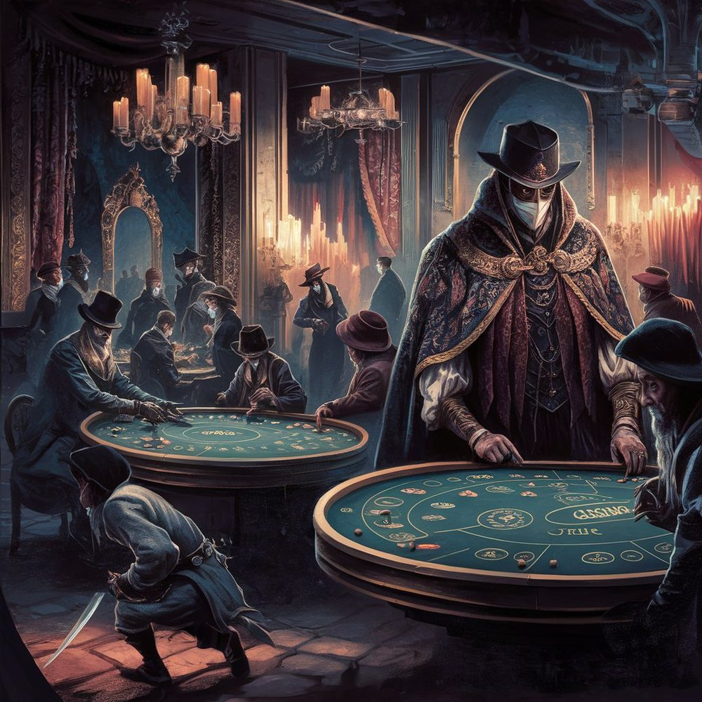

The Veil
Also known as: The Common Hand, the Voice of Mist (older names)
Values: Justice, Care
Symbol: A hand, yellow
Characteristic class: Monk
The Veil is a small, ancient order whose work is the judgement of tyrants. Its motto is “to make great men good and good men great” — sometimes glossed as a euphemism for assassination, but in fact a literal statement of order policy. The Veil prefers to turn a tyrant; the killing, when it comes, is a verdict the order takes years to reach.

Its founding doctrine is that taking a life is the worst thing a person can do, and so it must be the most considered. From this follows everything else about the order: the long observation of candidates, the cellular structure that prevents any single voice from ordering a death, the requirement that the inner cabal be unanimous, and the practice from which the Veil takes its name — the soul-walk, by which an agent enters a tyrant’s mind to know him before he is judged.
Origins and the Long Breath
The Veil began as a heterodox movement within the Wayfinders some seven or eight centuries ago. Where the parent tradition emphasises inaction, the founders argued that there are forms of stillness so deep they constitute their own kind of action — that the meditator who can hold the breath of another can also hold the conscience of another, and that the Wayfinder duty of non-harm cannot be discharged by simply withdrawing from a world full of harm.
From this argument grew the Long Breath, a meditative discipline taught only to a small number of initiates. A practitioner who has trained the Long Breath for ten or twenty years can, in deep trance, share the perception of a chosen subject for short periods — see what they see and hear their inner voice. Practitioners of the highest grade can do more than perceive: they can plant a thought, repeat one of the subject’s own memories back to him until he hears it differently, or hold the subject’s gaze on a face he has been trying to forget.
The technique is dangerous to its user. Long-Breath practitioners describe coming back to themselves with fragments of the subject’s appetites and habits half-grafted onto their own. Cell handlers spend significant time helping ritualists shed what they have brought back. Sustained soul-walking ages a practitioner unevenly: the body fails early while the mind sharpens, and Long-Breath masters in their fifties commonly look twenty years older.
The Twelve
At the centre of the order is the Council of Twelve, sometimes called the Twelve Hands. They are the only members of the Veil with the authority to certify a verdict against a named individual. The Twelve never gather; the order holds that any room containing all twelve is a room that can be raided. Their judgements are passed by dream-relay, a chain of soul-walking ritualists in different cities, each carrying one fragment of the verdict in a sealed vision and knowing only the name of the next ritualist in the chain. A complete verdict typically takes seven to ten days to assemble.
The Twelve are recruited from senior cell handlers and Long-Breath masters. They serve until they die or, very rarely, until they themselves are judged by the others and removed. The names of the Twelve are not known to the order at large; senior cell members may know two or three of them, in the way that one knows a face in a tavern without knowing the trade.
Cells
The Veil operates a cellular structure, like The Kin. A cell is typically five or six members: one or two active agents, a handler, a ritualist trained in the Long Breath, and a “hearth” — a member with a legitimate trade who keeps the safehouse and handles finances. Cells communicate through drop-sites and couriers rather than direct contact, and most agents never knowingly meet more than eight or nine other members of the order in their lifetimes.
Wilderness temples are usually disguised as abandoned monastic cells, mountain hermitages, or roadside shrines fallen into disrepair. Urban hideouts take the form of a shopfront with a back room, an older private house whose servants are all Veil, or a set of rooms let above a tavern that pays a discreet rent without asking questions. Orders from above arrive pseudonymously; the chain of command is sometimes called “the Voice of Mist”, an older term retained out of habit.
Recruitment
Agents are almost never approached young. The Veil prefers candidates in their late twenties or thirties who have already had reason to turn against a particular tyrant: a dispossessed peasant, a provincial cleric who has seen something done to his congregation, a soldier discharged for refusing an order. A handler will observe a candidate for as much as a year before a first conversation, which is typically indirect: a stranger at an inn asks the right question at the right moment, and the candidate’s answer determines whether the conversation continues.
Full membership comes only after a long probationary period during which the candidate runs errands of increasing gravity without being told why. By the time a candidate kills for the order, they have usually been in the Veil’s orbit for three or four years. Those who fail probation are not killed. They are simply dropped, on the theory that a disillusioned ex-recruit who never learned enough to expose the order is not worth the trouble of removing.
Ritualists — the Long-Breath line — are recruited along a separate track and almost always come from existing Wayfinder monasteries, where a master with the gift can be quietly approached by an older Veil ritualist who recognises the gift in his stillness.
Mercy and the verdict
The Veil’s stated preference is for turning rather than killing. Once a target is named, a ritualist is assigned to soul-walk him at intervals over months or years, with two intentions. The first is to know whether the man can be turned: whether the cruelty is policy or weakness, whether the order he upholds has any conscience left in it that can be made to shout. The second, when turning seems possible, is to do the turning — to hold the face of a victim before his eyes until he sees it whether or not he closes them, to repeat in his own inner voice the sentence he most wishes to forget having spoken.
Successful turnings are the order’s quiet pride. A tyrant who abdicated, or who one morning ordered the gallows pulled down and could not afterwards explain why — these are the marks of a turning, never claimed in public. The yellow hand, when it appears on a wall, is an admission that turning was tried and failed. Veil ritualists who certified a turning that subsequently held are remembered within the order long after their deaths.
Identification and tells
A working Veil agent carries no physical token. The yellow hand is a symbol used internally and on Veil-claimed bodies, not a badge. In practice, agents are identified to one another by small verbal patterns and by shared Long-Breath cadences, which an initiated observer can catch in the rhythm of a conversation. Outsiders who have had long dealings with the order sometimes learn to spot the tells — a way of holding a cup, a habit of asking a question twice in slightly different wordings — but the order rotates its tells deliberately to limit this.
Veil bodies are occasionally found with the yellow hand painted on the wall above the corpse. This is a claim of responsibility, not a calling card; the hand is painted only when the order wants the killing to be read politically.
Counter-protections
Powerful people in Moonrise who suspect the Veil’s interest sometimes commission protections against soul-walking. The most common is a series of Arcane Order wardings sewn into the lining of clothing or worked into the masonry of a private chamber. The Forest Kingdoms court employs a household ritualist whose sole duty is to maintain such wards over the High King’s person. Wards do not stop the Long Breath outright, but they distort what the soul-walker perceives, and a ritualist who pushes through a strong ward typically returns harmed.
The Veil treats such protections as a sign of bad conscience. A subject who wards himself heavily, in the order’s reading, is a subject who knows what would be found if the warding failed. Several judgements have been certified on the basis of warding alone, with the soul-walking left undone.
The soul-walk past death
Long-Breath masters who have practised the technique for forty or fifty years sometimes survive the death of their bodies for a few weeks, walking only in the dreams of trusted cell-mates to settle a particular task. The order regards this as unwholesome and discourages it. A clean death is held to be the proper end of a Veil master, and a ritualist who lingers past his time is generally being pursued by something he ought to have let go. A handful of such cases have nonetheless been recorded, usually involving an incomplete turning the master could not bear to leave.
Recent developments
Under new leadership, the Veil has taken a “turn to the people”, seeking to influence popular movements in the city-states rather than restrict itself to the judgement of named individuals. Soul-walking has been used, controversially, to trace the networks of agitation in Calackra and Mistdam, and to identify popular leaders the Veil judges worth supporting.
This has split the order. The older guard regard the turn as a dilution of discipline and a risk to the order’s secrecy: soul-walking a tyrant is one thing, soul-walking a popular movement is another, and the boundary between supporting a movement and steering it is uncomfortably narrow. The new leadership argues in return that the conditions producing tyrants can be addressed only by broader political action, and that the order’s traditional methods have at best produced a rotation of tyrants rather than an end to tyranny.
Outsiders who catch wind of this work, without grasping its source, have begun to speak of a loose reformist current they call the Common Hand — not realising that a single order stands behind it. The name is old: it was the Veil’s own, in the years before the order went fully covert.
Other practitioners
A small number of meditants in the Wayfinder tradition have stumbled on the Long Breath independently, usually after decades of solitary practice. The Veil keeps a list of known cases and visits each once a generation. Most are quietly discouraged from going further. A few, when they have shown the right temperament, have been brought into the order in their seventies and made ritualists for whatever time remained to them.
Idioms and phrases
- To walk in mist — to be under Veil protection or observation, depending on context.
- A yellow morning — a day on which a tyrant has been found dead.
- The long breath — the order’s preferred term for its century-spanning patience; also the meditative discipline from which the order takes its name.
- To put the hand on him — to soul-walk a subject for the first time. Used inside the order; outside, it has come to mean any decisive intervention in another’s affairs.
- He woke up yellow — said of a public figure who, overnight, has changed his mind on a matter of consequence; outside the order, used loosely; inside, only of confirmed turnings.
Notable connections
One of The Three was originally an agent of the Veil, tasked with destroying the Bleeding King by any means necessary. The order has not since claimed her work as its own, but neither has it disowned her.
See also
- The Three — one of the Three was a Veil agent
- Wayfinders — the philosophical tradition from which the Veil originated
- The Kin — the other major cellular secret society
- Arcane Order — supplies the wards that powerful targets use against soul-walking